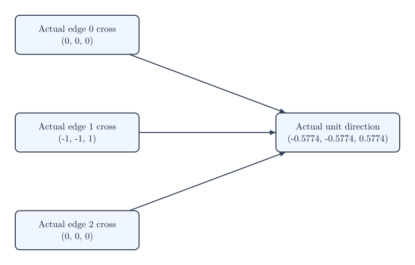
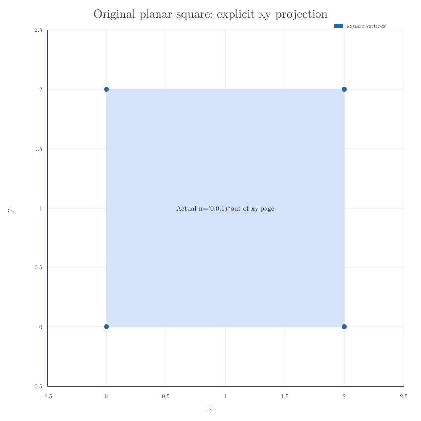
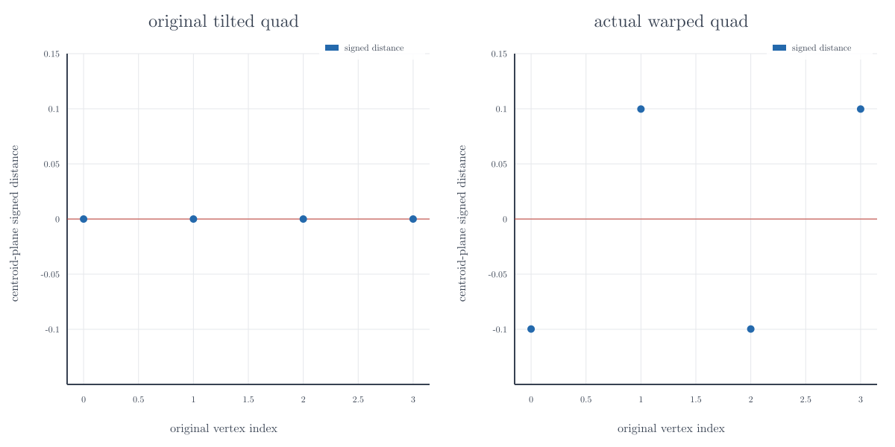
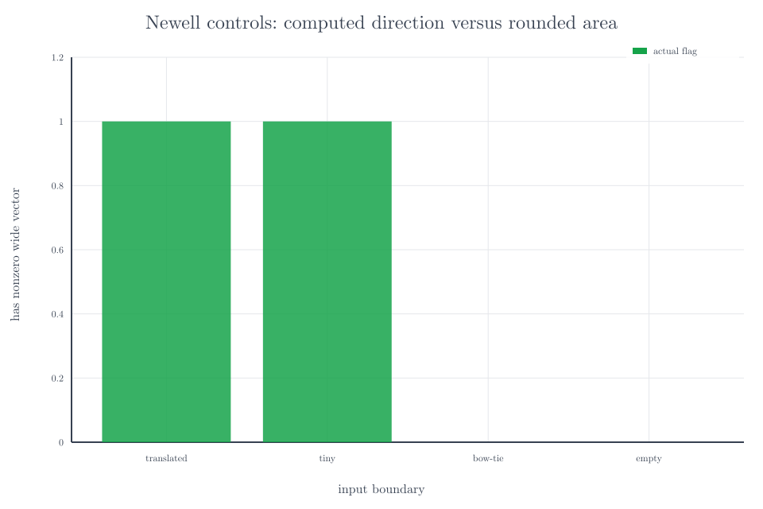

Newell normals: cyclic vector area
Abstract
Compute a polygon boundary’s oriented vector area and derive a unit direction when that vector is nonzero. Actual translated cyclic-edge records explain the method, followed by the original square, triangle and tilted quad. We correct the old claim that the tilted quad is nonplanar, add a genuinely warped control and distinguish vector area, plane residuals and physical surface area.
What the cyclic sum measures
For cyclic vertices p_i, Newell’s original components sum (y_i−y_next)(z_i+z_next), (z_i−z_next)(x_i+x_next) and (x_i−x_next)(y_i+y_next). Expanding each component makes its same-vertex products telescope, leaving n=Σp_i×p_next. Translating all vertices by a common origin does not change this exact sum, because the added terms telescope too. The canonical implementation now translates by the first vertex and accumulates the actual cross products in long double, reducing cancellation from a large common translation.
For a simple planar boundary, n is twice its signed area times a unit normal; |n|/2 is its area. Winding reversal changes the sign. For a nonplanar boundary, the components still measure signed projected areas, but |n|/2 is a vector-area magnitude, not the area of an unspecified curved surface or arbitrary triangulation. A self-intersecting boundary can cancel to zero even when its lobes have nonzero area. No simplicity or planarity certificate is inferred from one nonzero vector.
A tilted triangle and its actual contributing edges
The original tilted triangle has vertices(0,0,0),(1,0,1),(0,1,1). With the first vertex as origin, only its middle edge contributes a nonzero cross product, namely(−1,−1,1). Dividing by its norm gives the unit direction(−1,−1,1)/√3. The diagram reads every actual edge contribution and the actual final unit vector; it does not reconstruct a second Newell loop.
#include <dm/dm.hpp>
int main() {
std::filesystem::create_directories("build");
auto f = dm::algorithms::newell_demo_polygons();
auto t = dm::algorithms::newell_trace(f[1].polygon);
dm::graphics::Diagram d;
std::print("| actual edge | next vertex | cross x | cross y | cross z |\n| ---: | ---: | ---: | ---: | " "---: |\n");
for (auto &e : t.edges) {
std::print("| {} | {} | {} | {} | {} |\n", e.index, e.next,
double(e.cross[0]), double(e.cross[1]), double(e.cross[2]));
d.node(std::to_string(e.index), {0., 3. - 3. * e.index},
std::format("Actual edge {} cross\n({}, {}, {})", e.index,
double(e.cross[0]), double(e.cross[1]),
double(e.cross[2])));
}
d.node("unit", {8, 0},
std::format("Actual unit direction\n({:.4f}, {:.4f}, {:.4f})",
t.analysis.unit[0], t.analysis.unit[1],
t.analysis.unit[2]));
for (auto &e : t.edges)
d.edge(std::to_string(e.index), "unit");
d.save_svg("build/newell_tiny.svg");
}| actual edge | next vertex | cross x | cross y | cross z |
|---|---|---|---|---|
| 0 | 1 | 0 | 0 | 0 |
| 1 | 2 | -1 | -1 | 1 |
| 2 | 0 | 0 | 0 | 0 |

Retain all three original polygons
The original square in z=0 has unit normal(0,0,1) and area4. The figure explicitly shows its xy projection: the normal points out of the page, so its xy components cannot form a visible in-plane arrow. The printed values are actual native results for the square, triangle and original tilted quad. The native fixture preserves all their original coordinates.
The original quad is(0,0,0),(2,0,.1),(2,2,0),(0,2,−.1). These vertices share the plane z=.05x−.05y; calling it “slightly non-planar” was incorrect. Its native signed distances to the centroid plane are near rounding zero. This is a useful tilted planar control rather than evidence of behavior on warped input.
#include <dm/dm.hpp>
int main() {
std::filesystem::create_directories("build");
auto fixtures = dm::algorithms::newell_demo_polygons();
std::print("| original case | actual unit x | actual unit y | actual unit z | vector-area magnitude | " "maximum centroid-plane distance |\n| --- | ---: | ---: | ---: | ---: | ---: |\n");
for (int i = 0; i < 3; ++i) {
auto a = dm::algorithms::newell_analyze(fixtures[i].polygon);
std::print("| {} | {} | {} | {} | {} | {} |\n", fixtures[i].name,
a.unit[0], a.unit[1], a.unit[2], a.vector_area,
a.max_plane_distance);
}
auto a = dm::algorithms::newell_analyze(fixtures[0].polygon);
std::vector<double> x, y;
for (auto &v : fixtures[0].polygon) {
x.push_back(v[0]);
y.push_back(v[1]);
}
auto p = dm::graphics::RPlot::create();
p.polygon(x, y, {213, 226, 249}).points(x, y, "square vertices",
{36, 105, 172}, 5).text(
1, 1,
std::format("Actual n=({:.0f},{:.0f},{:.0f})\nout of xy page",
a.unit[0], a.unit[1], a.unit[2]), {17, 24, 39}, 14).size(
850, 850).margins(95, 35, 60, 70).x_limits(-.5, 2.5).y_limits(-.5, 2.5).title("Original planar square: explicit xy projection").x_label("x").y_label("y").save_svg("build/newell_original.svg");
}| original case | actual unit x | actual unit y | actual unit z | vector-area magnitude | maximum centroid-plane distance |
|---|---|---|---|---|---|
| original square | 0 | 0 | 1 | 4 | 0 |
| original triangle | -0.5773502691896257 | -0.5773502691896257 | 0.5773502691896257 | 0.8660254037844386 | 1.3552527156068805e-20 |
| original tilted quad | -0.04987546680538165 | 0.04987546680538165 | 0.9975093361076329 | 4.009987531152684 | 2.791820594150174e-18 |

A genuinely warped quad and an honest plane diagnostic
Changing only the fourth vertex’s z coordinate from−.1 to.3 makes the quad nonplanar. The native diagnostic plane passes through the arithmetic centroid and uses the returned Newell unit direction. Signed distances quantify how this specific plane represents the supplied vertices; it is not asserted to minimize squared distances or furnish a supporting plane. The two panels use identical signed-distance limits. Near-zero values for the original quad and nonzero values for the corrected control separate the experiments directly.
No unique scalar surface area follows from a nonplanar boundary alone. Choosing a diagonal, triangulated mesh or spanning surface adds information that this API does not receive. Consequently the reported scalar keeps the name vector-area magnitude throughout the warped experiment.
#include <dm/dm.hpp>
int main() {
std::filesystem::create_directories("build");
auto fixtures = dm::algorithms::newell_demo_polygons();
auto layout = dm::graphics::RLayout::create(1, 2);
std::print("| case | actual maximum absolute plane distance | actual vector-area magnitude |\n| --- | " "---: | ---: |\n");
for (int index : {2, 3}) {
auto a = dm::algorithms::newell_analyze(fixtures[index].polygon);
std::print("| {} | {} | {} |\n", fixtures[index].name,
a.max_plane_distance, a.vector_area);
auto p = dm::graphics::RPlot::create();
p.points({0, 1, 2, 3}, a.signed_plane_distances, "signed distance",
{36, 105, 172}, 5).abline_h(0, {192, 59, 50}, 1).title(
fixtures[index].name).x_label("original vertex index").y_label(
"centroid-plane signed distance").y_limits(-.15, .15);
layout.add(p);
}
layout.size(1200, 600).fit_panels().save_svg("build/newell_warped.svg");
}| case | actual maximum absolute plane distance | actual vector-area magnitude |
|---|---|---|
| original tilted quad | 2.791820594150174e-18 | 4.009987531152684 |
| actual warped quad | 0.09975093361076329 | 4.009987531152684 |

Translation, tiny vectors and cancellation controls
The translated square below adds10¹⁶ to every coordinate while retaining exactly representable edge differences. Translating before cross products preserves its area4; the old unshifted expression was vulnerable to cancellation of large coordinate products. This improvement does not recover detail already lost when input doubles were rounded.
A triangle with side length equal to the smallest positive binary64 subnormal has a nonzero wide vector area on this platform, yet its raw binary64 components and scalar area round to zero. Normalizing the wide vector still returns a meaningful z direction. Conversely a crossing bow-tie can have exactly cancelling signed vector area, so its zero result is no proof that every lobe has zero area. The explicit has_direction flag reports whether the computed wide norm is nonzero; undefined-plane distances are zero placeholders.
#include <dm/dm.hpp>
int main() {
std::filesystem::create_directories("build");
using dm::algorithms::Point3D;
auto square = dm::algorithms::newell_demo_polygons()[0].polygon;
for (auto &p : square)
for (auto &x : p)
x += 1e16;
double tiny = std::numeric_limits<double>::denorm_min();
std::vector<std::vector<Point3D>> polygons{square,
{{0, 0, 0}, {tiny, 0, 0},
{0, tiny, 0}},
{{0, 0, 0}, {1, 1, 0}, {0, 1, 0},
{1, 0, 0}}, {}};
std::vector<std::string> labels{"translated", "tiny", "bow-tie", "empty"};
std::vector<double> directions;
std::print("| case | actual vector-area magnitude | has computed direction | unit z | actual cyclic " "edges |\n| --- | ---: | --- | ---: | ---: |\n");
for (std::size_t i = 0; i < polygons.size(); ++i) {
auto a = dm::algorithms::newell_analyze(polygons[i]);
directions.push_back(a.has_direction);
std::print("| {} | {} | {} | {} | {} |\n", labels[i], a.vector_area,
a.has_direction, a.unit[2], a.edges);
}
auto p = dm::graphics::RPlot::barplot(directions, labels, "actual flag");
p.title("Newell controls: computed direction versus rounded area").x_label(
"input boundary").y_label("has nonzero wide vector").y_limits(0, 1.2).save_svg("build/newell_controls.svg");
}| case | actual vector-area magnitude | has computed direction | unit z | actual cyclic edges |
|---|---|---|---|---|
| translated | 4 | true | 1 | 4 |
| tiny | 0 | true | 1 | 3 |
| bow-tie | 0 | false | 0 | 4 |
| empty | 0 | false | 0 | 0 |

Contracts, cost and references
Every original coordinate is checked finite before arithmetic or capture policies. Empty, short, repeated-vertex and self-intersecting boundaries are accepted with the stated conventions. Wide intermediates and final binary64 raw/area/residual outputs are checked for finiteness; unrepresentable outputs throw, while underflow may round to zero. Long-double range and precision are platform dependent. None of these guards certifies conditioning or geometric validity.
Ordinary raw/unit/area queries use O(N) work and O(1) driver storage. The analyzed result adds N plane distances, and the owned trace adds input coordinates and N fixed-size actual edge records. Its complete logical quota is3+5N: origin3, original coordinates3N, edge records N and signed distances N, excluding fixed analysis metadata. Default1000000 units, zero disables, checked before copying/arithmetic; no partial trace is returned.
Tampieri (1992), Newell’s Method for Computing the Plane Equation of a Polygon, Graphics Gems III, pages231–232 gives an original implementation reference. Newell’s vector-area method is historically associated with polygon plane estimation in hidden-surface algorithms; the original report’s broader surface-area claim is restricted here to simple planar boundaries. The telescoping derivation above specifies the implemented cyclic sum and its translation invariance directly, while actual edge histories and signed-distance controls expose its numerical and geometric limits.
Verification
This ten-report batch passes75 CTest cases,22 directly instrumented ASan/UBSan
cases,122 compiled and executed public examples,538/538 scoped documentation
definitions and ten representative clangd hovers. Independent Python
arbitrary-precision arithmetic verifies69365 captured division records
with656460 checks; native independent polynomial, geometry, finite-range, graph,
ranking and callback checks cover the remaining producers. Frozen valid-input
comparisons preserve Neville recurrences, Newton result/callback paths, complete
byte encodings, switch routes and NSGA-II complete objective-call
sequences/final fronts. Ten checkout headers and ten byte-identical installed
development headers compile independently; an installed-header native consumer
links and runs. All40 complete programs execute, and40 native figures have been
visually reviewed; HTML/Markdown exports preserve computed rows/prose and
identical image bytes. Checks are scoped native checks, not an installation
claim for every language binding. Receipts:
build/mepml-conversion/batch-254-263/.